Nonlinear dimensionality reduction
Reader-friendly version of the 58 lecture slides: the lecture content in normal flow, with figure descriptions and data tables where the figure carries data. Open the presentation.
Slide 1

Nonlinear dimensionality reduction
Slide 2
Your questions from Tuesday
- "If there are 50 principle components, why is it/how can it be represented by just 2 axes as on the ppt slides?": it cannot. A PCA plot keeps the two directions along which the points vary most over the whole data set and drops the other 48. Points that differ only along the dropped directions land on top of each other. That is where today's nonlinear methods come in: instead of keeping a few directions, they keep relationships between points, above all who is whose neighbor.
- "Does this mean neural signals are operating in 2 dimensional space": no. For the Bao et al. objects in AlexNet fc6 (Assignment 1 Part 3), the first two components hold only 22% of the variance, and 85% takes 87 (Bao et al. report about 50). Counting components to a threshold measures the linear dimension and treats the rest as noise. If the data lie on a curved surface, the intrinsic dimension, the number of dimensions needed to locate a point on it, can be far smaller.
Next: what every 2-D picture of the data gives up.
Slide 4
Every low-dimensional picture is an approximation

A three-dimensional cloud of points lying close to, but not on, a plane spanned by two principal directions v1 and v2, with axes x-tilde 1, 2 and 3. Dashed red residuals join several points to the plane; one point, x-tilde, is joined to its projection on the plane
Open full-size figure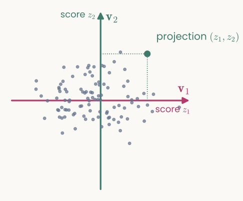
PCA: the same 100 points drawn in two dimensions, each at its coordinates z1 and z2 along v1 and v2; the projected point is marked in green, with dotted lines to z1 and z2 on the axes
Open full-size figure{kind=link}
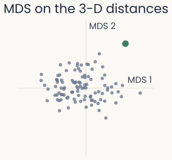
MDS on the Euclidean distances between the same points: a two-dimensional map that looks the same as the PCA map, with the same point in green
Open full-size figure{kind=link}
- PCA keeps each point's projection onto the plane of largest variance; MDS keeps the distances between points.
- PCA drops each point's distance from the plane, the dashed red residual, assuming it is noise.
- MDS cannot drop it: to keep every distance, it spreads the residual into the map, which distorts it.
Green point, far above the plane: PCA drops it among the others; MDS pushes it to the edge.
Slide 5
Real images curve: turning one photograph
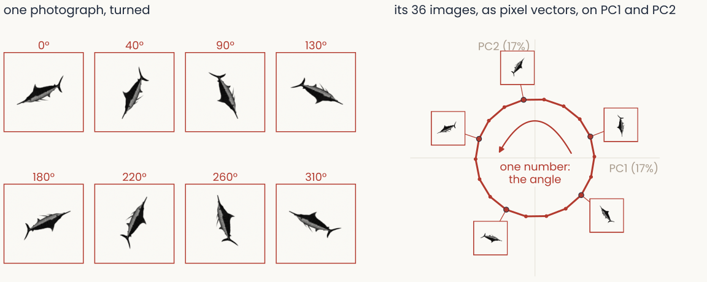
Left, eight frames of one photograph of a marlin turned from 0 to 310 degrees, each drawn whole on a padded square. Right, all 36 turned images treated as pixel vectors and projected onto their first two principal components: the points trace a closed loop, with five of the frames drawn next to their points
Open full-size figure{kind=link}
- Why look? Recognition needs one object's images to stay together. In pixels, turning alone sends the fish on a loop that needs 24 PCs for 90%, yet one dimension, the angle, locates every image.
Slide 6
Shifting traces a curve too
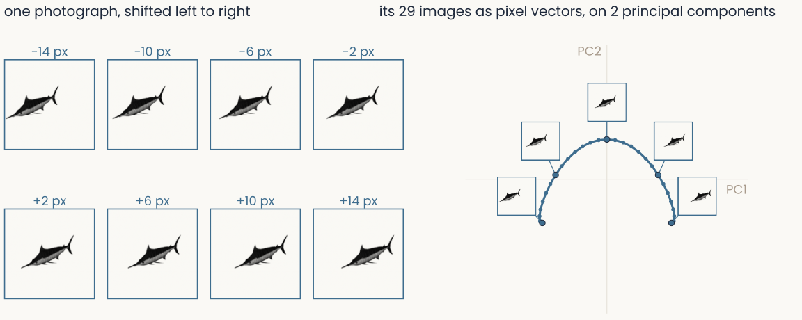
One photograph shifted from 14 pixels left to 14 pixels right: eight frames and, on the first two principal components, an arch-shaped curve with five of the frames drawn next to their points
Open full-size figure{kind=link}
- Slide the photograph left to right: one knob, one curve. It bends, so it is not a straight line in pixel space.
Slide 7
Enlarging traces another curve
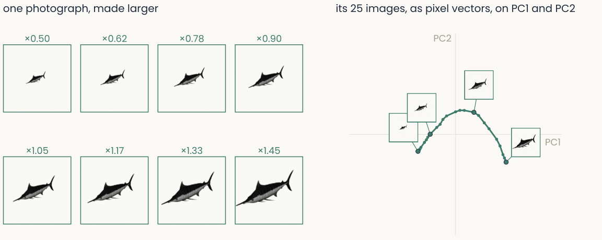
The same photograph enlarged from half size to 1.45 times: eight frames and, on the first two principal components, another arch-shaped curve with four of the frames drawn next to their points
Open full-size figure{kind=link}
- Each knob gives a one-dimensional curve. Turn all three at once and the images fill a three-dimensional curved surface. Next: all three in one PCA.
Slide 8
All three changes in one PCA
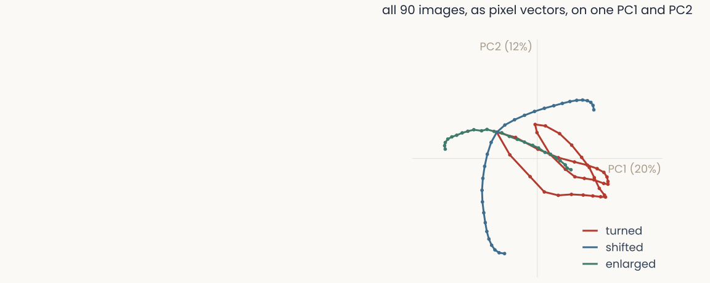
All 90 images of the marlin, turned, shifted and enlarged, projected together onto the first two principal components of the whole set, on the same axes and scale as the previous three slides: the turning loop in red, the shifting arc in blue and the enlarging path in green, each distorted and crossing the others
Open full-size figure{kind=link}
- The same 90 images as the last three slides, now in one PCA.
- Alone, each change was a clean curve. Together they are distorted and cross: from this map you cannot read how far the fish was turned, shifted or enlarged.
- Each image is set by one knob value, yet PCA needs 36 components to keep 90% of the variance.
In pixels, one fish's images spread over many curved directions. Does a trained network pull them together?
Slide 9
Turn the knobs yourself
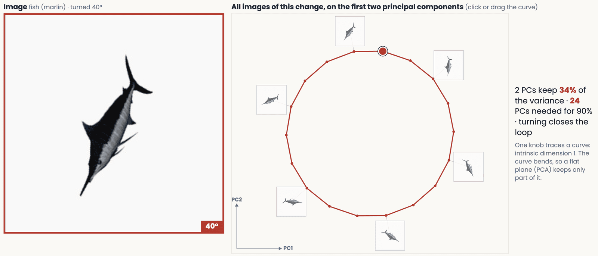
The transformation demo: the marlin turned 40 degrees shown large, beside the closed loop traced by all its turned images on two principal components, with the variance kept by two components and the number needed for 90 percent
Open full-size figure{kind=link}
Slide 10
What is a manifold?
The Earth photographed from space: a curved surface that looks flat to someone standing on it
Open full-size figure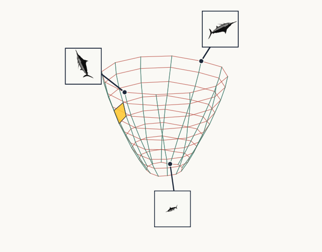
A curved surface drawn as a mesh shaped like a dome: red rings and green spokes. It is made of 216 images of the marlin, turned in 15-degree steps at nine sizes, placed on their first three principal components. Each red ring is one size turned all the way round; each green spoke is one angle enlarged. One small mesh cell is shaded gold. Thumbnails show the smallest marlin at the top of the dome and two large ones at the base
Open full-size figure{kind=link}
- Turn and enlarge one photograph: red rings are one size turned round; green spokes are one angle enlarged.
- The images fill a curved surface: a manifold. Up close (the gold cell) it is flat.
- Intrinsic dimension: how many dimensions are needed to locate a point on it? Here 2, the angle and the size.
- Ambient space: where it sits, 9,216 pixel values.
Next: many objects, each with its own manifold, in a trained network.
Slide 11
Objects seen from many viewpoints
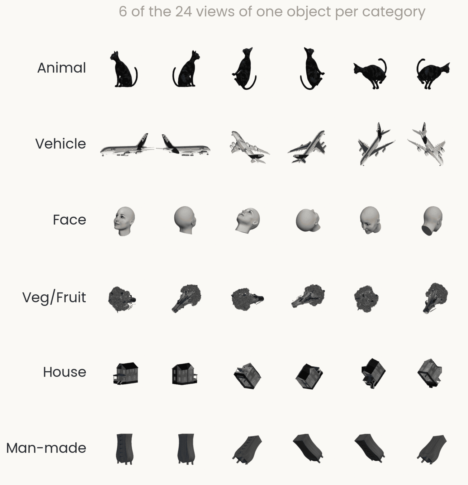
A grid of renderings, one row per category (animal, vehicle, face, vegetable or fruit, house, man-made object). Each row shows two different objects of that category, for example a cat and a duck, an airliner and a bicycle, each seen from three of its 24 viewpoints
Open full-size figure{kind=link}
- 1,224 images: 51 objects, each rendered from 24 views, in 6 categories.
- Bao, She, McGill & Tsao showed these images to monkeys while recording from IT cortex, the late stage of the visual system where neurons respond to whole objects. You also use them in Assignment 1.
- Here each image is a point in fc6, a late layer of the image network AlexNet: 4,096 numbers per image.
- Two levels of grouping: views of the same object, and objects of the same category.
- The question: pixels scatter an object's views. Does the network keep them together, and keep different objects apart?
Slide 12
One object, 24 views: one patch
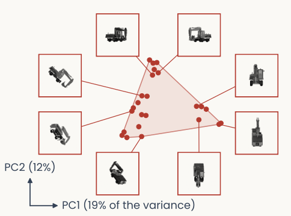
The 24 views of one excavator as points on two axes, PC1 and PC2, from a PCA of the network's responses to just these 24 images. The points form one compact triangular patch, shaded red. Eight of the views are drawn around the patch, each joined by a line to its own point
Open full-size figure{kind=link}
- Each dot is one photograph of the same excavator, placed by the network's response to it. The axes are the two principal directions of those 24 responses.
- Very different images, one patch: all the ways this object can look.
- Compare the pixels, where turning alone traced a long loop: the network gathers the views.
Slide 13
Three objects, three patches
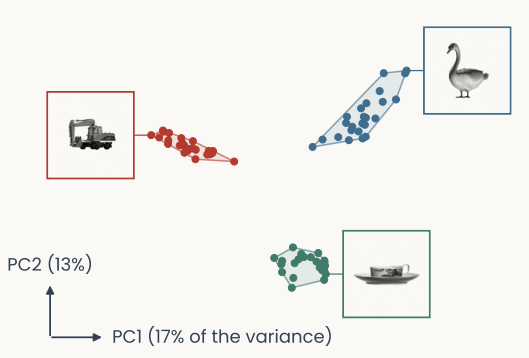
The 24 views of each of three objects, an excavator in red, a swan in blue and a teacup in green, on one shared pair of axes from a PCA of all 72 responses. Each object's views form a small separate patch, far from the other two; one photograph of each object is drawn beside its patch
Open full-size figure{kind=link}
- Now one PCA of all 72 responses together. Each object keeps to its own small patch, and the patches are far apart.
- Viewpoint moves a response within a patch; identity moves it between patches.
- And the brain? Bao et al. recorded monkey IT cortex with these same images: do its neurons also keep each object together? That question drives the recognition lectures.
Slide 14
Drawn in 2007, computed today
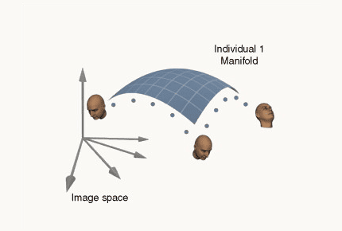
DiCarlo and Cox's drawing: one person's face images trace a curved sheet, a manifold, inside image space, with three example heads at different poses on it
Open full-size figure{kind=link}
The three-object figure from two slides back: 24 views each of an excavator, a swan and a teacup, as a trained network's late-layer responses on two principal components; each object forms its own compact patch, far from the others
Open full-size figureOne sheet per object. In a trained network, the sheets of different objects sit apart. In pixels, they do not: next slide.
Slide 15
Two sheets, tangled
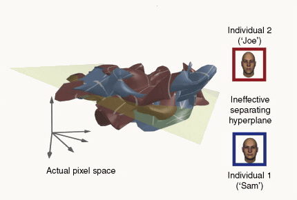
In actual pixel space the sheets of two different people are interleaved, and a flat separating plane drawn through them fails to split them
Open full-size figure{kind=link}
- In pixel coordinates the sheets of two people interleave.
- Recognizing who it is means finding a flat boundary, a hyperplane, with one person's sheet on each side. Here none exists.
- That boundary is what a linear classifier learns. A good representation untangles the sheets; testing that with a linear probe is a later lecture.
Next: to see whether a representation untangles them, we need to draw manifolds.
Slide 16
How do we see a manifold?
To ask whether object manifolds are tangled or untangled, we have to look at them, but they live in thousands of dimensions. We need a 2-D map that keeps their shape. First, test the maps on a manifold whose true shape we know.
Slide 17
Test case: can PCA unroll a known manifold?
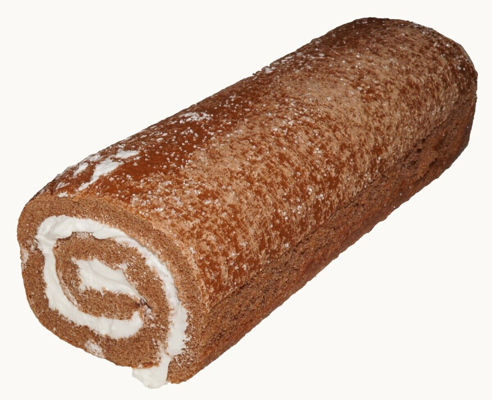
A chocolate Swiss roll cake with the cream spiral visible at its cut end
Open full-size figure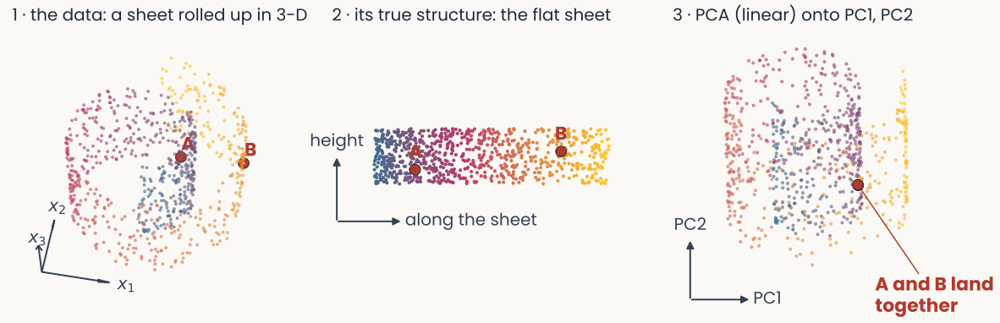
Three panels. Left, the Swiss roll in 3-D with axes x1, x2, x3; points A and B lie on neighboring turns. Middle, the true structure: the same points laid out as the flat sheet before rolling, where A and B are far apart. Right, a flat 2-D plot with axes PC1 and PC2: the PCA projection, where the turns overlap, colors mix and A and B land on the same spot
Open full-size figure{kind=link}
- 1 → 2: a 2-D sheet rolled up in 3-D. A and B are 11.5 apart in a straight line (Euclidean distance in 3-D), but 59.5 apart walking along the sheet.
- 3: PCA is linear: it can only rotate the data and project onto a flat plane. It keeps 71% of the variance, yet folds the roll: A and B land on the same spot.
Slide 18
Linear methods fold the roll
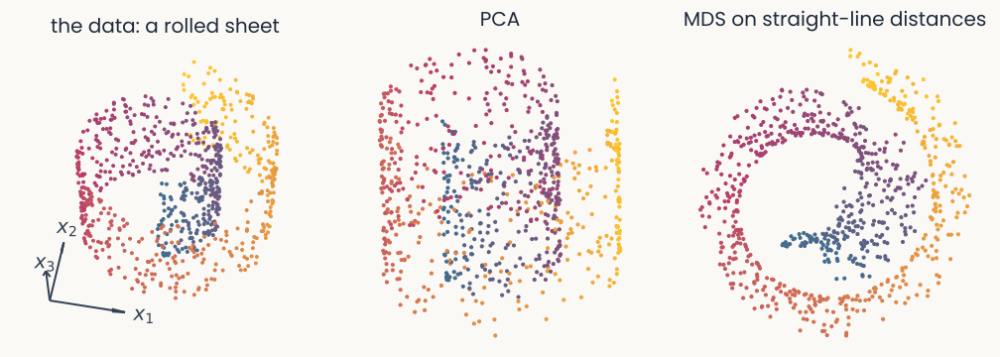
Three panels. Left, the Swiss roll in 3-D, colored blue to gold along the sheet, with points A and B on neighboring turns, exactly as on the previous slide. Middle, its PCA projection: the turns overlap, the colors mix, and A and B land together. Right, MDS on the straight-line distances between points: the map is still a spiral, with colors that should be far apart lying next to each other
Open full-size figure{kind=link}
- PCA keeps the directions of largest variance; MDS keeps the straight-line distances. Both see the data through a flat lens.
- Points on neighboring turns are close through the air, so both methods put them close. Neither recovers position along the sheet. The fix: better distances, not a better projection.
Slide 19
Perich's origami crane
A white paper crane folded from one uncut square of paper, photographed on a plain blue background
Open full-size figure{kind=link}
- A crane is folded from one flat square: nothing is cut or glued.
- It sits in 3-D, yet it is still a 2-D sheet: unfold it and you get the square back.
- If the square had text printed on it, the crane would hide it. To read it, you must unfold, not just look from a better angle.
Next: why no flat view is enough.
Slide 20
Squashing is not unfolding
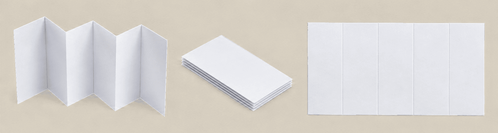
Three photographs of white paper on blue. Left, a sheet folded like an accordion, standing in 3-D. Middle, the same accordion pressed flat into a thin stack, all its panels on top of each other. Right, the sheet opened out flat, the fold lines visible between five panels
Open full-size figure- PCA picks a flat view, so the panels land on top of each other. A nonlinear method aims to unfold the sheet.
Slide 21
Three ways to count dimensions
| Swiss roll | Turned photo | Bao objects (fc6) | |
|---|---|---|---|
| Ambient: coordinates per point | 3 | 9,216 pixels | 4,096 units |
| Embedding: flat subspace PCA needs | 3 | 24 PCs (90%) | 149 PCs (90%) |
| Intrinsic: dimensions to locate a point on it | 2 | 1 (angle) | unknown |
- The three numbers answer different questions; none is the dimension.
- PCA measures the embedding dimension. It overestimates the intrinsic one whenever the manifold curves.
- For real data such as the network's responses to the Bao objects, the intrinsic dimension is unknown: that is what the nonlinear methods coming next try to reveal.
Slide 22
How could we fix this?
Keep the MDS idea, but change the distances. Instead of measuring straight through the air, measure along the data: only step from a point to its nearest neighbors, and add up the steps.
Slide 23
Isomap: measure "along the sheet", then run MDS
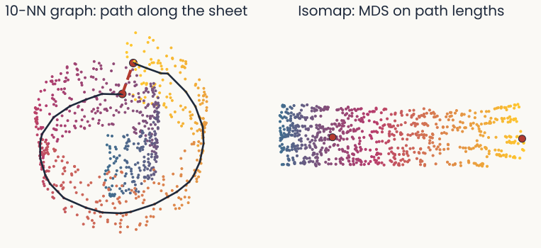
Left, the Swiss roll with two probe points one turn apart: a short dashed red segment joins them straight through the roll, and a long black path joins them by hopping between nearest neighbors around the spiral. Right, the Isomap layout: a flat strip ordered blue to gold, with the two probes at opposite ends
Open full-size figure{kind=link}
- Connect each point to its 10 nearest neighbors. The shortest path through that graph approximates the "along-the-sheet" distance: 71.3 for the two probes, 6.1 in a straight line.
- Run MDS, from the second lecture, on those path lengths. The roll unrolls if the points cover the sheet densely and no edge jumps between turns.
Slide 24
Folded paper: you cannot read it flat

Four panels. 1, a page printed with the word MANIFOLD. 2, the page rolled into a Swiss roll in 3-D, the letters wrapped around it. 3, the PCA projection: the turns land on top of each other and the letters pile up into an unreadable block. 4, the Isomap layout: the page unrolled, and MANIFOLD reads again
Open full-size figure- The crane, computed: a page printed with text, rolled into a Swiss roll.
- PCA gives the best flat view, but the letters pile up. To read the text, you must unfold the sheet: a nonlinear method such as Isomap (panel 4).
Slide 25
Isomap in practice
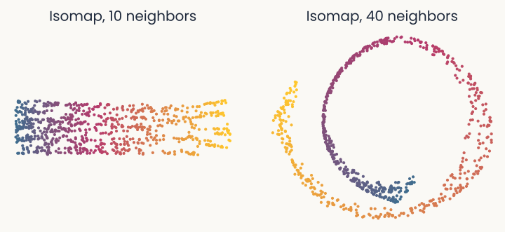
Isomap on the Swiss roll with 10 neighbors: a clean flat strip ordered blue to gold. With 40 neighbors: the neighbor graph jumps between turns and the map curls back into a spiral with mixed colors
Open full-size figure{kind=link}
- One wrong edge between turns (a short circuit) and the roll folds again.
- It also needs densely sampled data without holes, and becomes slow for large data sets.
- So Isomap is rarely used today. The popular modern methods are t-SNE and UMAP; we focus on t-SNE, which you use in Assignment 1.
Slide 26
t-SNE
Convert distances into neighbor probabilities, then find a low-dimensional layout, usually 2-D, that approximates those neighbor probabilities.
Slide 27
What t-SNE is trying to do
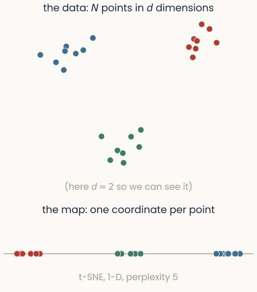
Top, 24 points in three tight groups in a plane (blue, red, green), labelled N points in D dimensions. Bottom, the 1-D t-SNE map of the same points: a single line on which each group occupies its own stretch, red, then green, then blue
Open full-size figure{kind=link}
- Like MDS, t-SNE places the points in a low-dimensional map, usually 2-D (here 1-D, a line, so the example is easy to see), so that relationships in the map match relationships in the data.
- MDS tries to match all distances. t-SNE matches neighbors: close in the data stays close in the map; large distances are not kept.
- t-SNE does not look for clusters: clusters survive because their members are each other's neighbors.
- Three steps: (1) data: distances → neighbor probabilities ; (2) map: similarities ; (3) move the map points until matches .
Slide 28
Step 1 — in the data: distances →
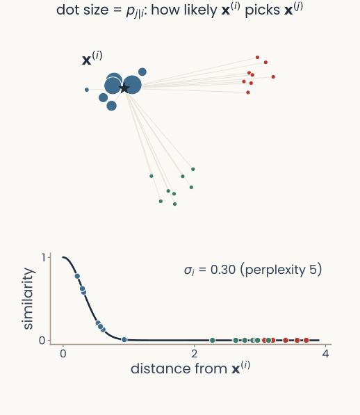
Top, the three-group data in the same positions as on the setup slide, with one point, x-tilde-i, starred; the other points are drawn larger the more neighbor probability the starred point gives them, so only its own blue group is visibly large. Bottom, a Gaussian curve of similarity against distance from the starred point, with every other point placed on it (bottom): the blue points sit on the steep part, the red and green points at almost zero
Open full-size figure{kind=link}
- Center a Gaussian on each point and normalize:
- Read it as: "if I am point , how likely am I to pick as my neighbor?" In MDS terms, replaces the dissimilarities, warped: near pairs count a lot, far ones almost nothing.
- Each point gets its own width , a free parameter: narrow in dense regions, wide in sparse ones.
- Make it symmetric: , one probability per pair.
Slide 29
Perplexity: how many neighbors each point listens to
- You do not set each point's width by hand. You choose one number, the perplexity: roughly, how many neighbors each point should pay attention to.
- t-SNE then widens or narrows each point's Gaussian until it has about that many neighbors: narrow in dense regions, wide in sparse ones.
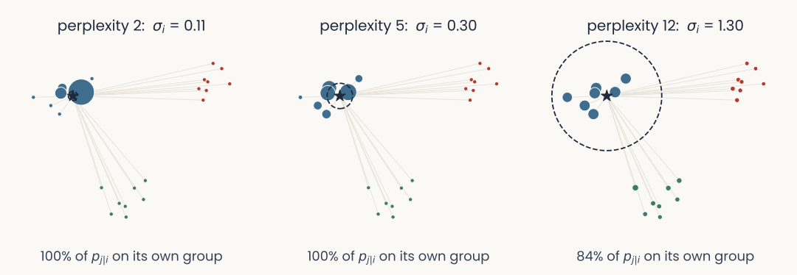
The toy data with the starred point x-i at three perplexities. At perplexity 2, sigma-i is 0.11 and almost all probability goes to one neighbor; at 5, sigma-i is 0.30 and the probability spreads over its own blue group; at 12, sigma-i is 1.30, the dashed circle marking the Gaussian's width is large, and 16 percent of the probability reaches the other groups
Open full-size figure{kind=link}
Slide 31
Perplexity changes the map
- Two clusters of 50 points each, 100 in all. Perplexity is a number of neighbors, so it must stay below the number of points: the last panel, perplexity 100, is not valid.
- Typical range 5–50. Run a sweep and trust only what holds across it.
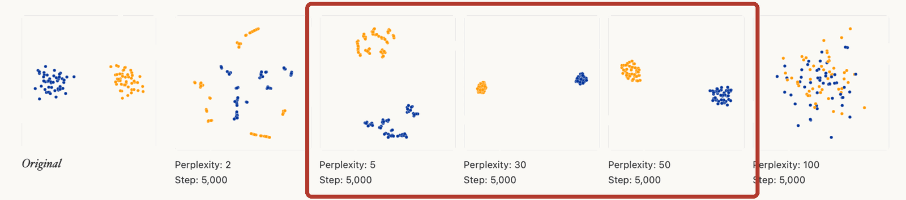
The same strip with a red box around the perplexity 5, 30 and 50 panels: in all three the two groups come out separate and never mix. The same two clusters embedded at perplexity 2, 5, 30, 50 and 100: fragmented shards at low values, two clean clusters near 30 to 50, and mixed points at 100
Open full-size figure{kind=link}
Stable across 5–50: two groups that never mix. That, and only that, is worth interpreting.
Slide 32
Step 2 — in the map: similarities
- In the map (in MDS, the map distances): similarity of map points with a Student- kernel, not a Gaussian:
- Why the t? A point can have many equally-near neighbors in the data, but a 2-D page fits only a few around it (crowding). The heavy tail lets the rest sit farther out.
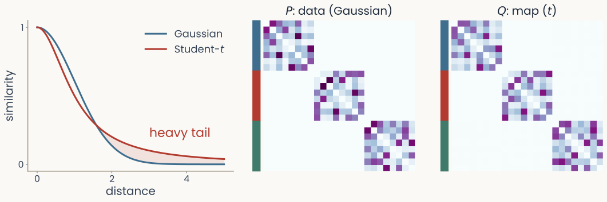
Left, a Gaussian and a Student-t similarity curve against distance; the t curve stays higher at large distances, shaded as the heavy tail. Middle and right, 24-by-24 matrices of pair probabilities for the three-group data: P in the data and Q in the 1-D map, both with three bright diagonal blocks, one per group
Open full-size figure{kind=link}
Slide 33
Step 3 — move the map until matches
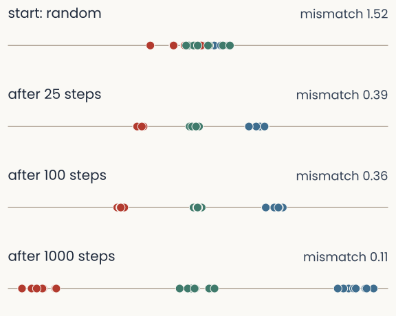
The 1-D t-SNE run on the toy data at four moments on a common scale. At the start the points are scattered at random and the colors are mixed, mismatch 1.52; after 25 steps the three groups have formed, mismatch 0.39; after 100 steps, 0.36; after 1,000 steps the groups sit apart, mismatch 0.11
Open full-size figure{kind=link}
- As in MDS: drop the points on the line at random, measure how badly matches , nudge every point a little to reduce the mismatch, repeat.
- The mismatch is the KL divergence, ; the nudging is gradient descent. Both return when we train neural networks.
- A fixed number of steps does not guarantee the map has settled.
Slide 34
What the mismatch punishes
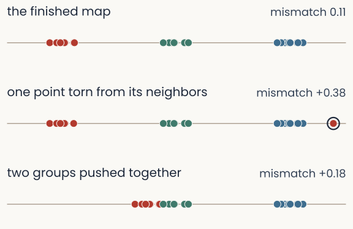
The finished 1-D map of the toy data, mismatch 0.11. Below it, the same map with one point pulled away from its group to the far end: mismatch rises by 0.38. Below that, the same map with one whole group slid up against another: mismatch rises by only 0.18
Open full-size figure{kind=link}
- Tearing one point from its neighbors costs more than pushing a whole group of eight against another.
- Close pairs (large ) dominate the mismatch; far pairs barely count.
- So t-SNE keeps neighbors, not distances. A t-SNE map is not a projection: distances, sizes and gaps in it are not distances in the data.
Next: UMAP, the same idea built differently.
Slide 35
UMAP: a related way to build a neighborhood map
- Connect each point to nearby points in the original space, giving stronger connections to closer neighbors.
- Lay out the map to favor those connections, while keeping unrelated points from collapsing together.
n_neighborssets the neighborhood scale;min_disthow tightly points pack.- Same data, same lesson: both maps keep local neighbors and tear the sheet in places.
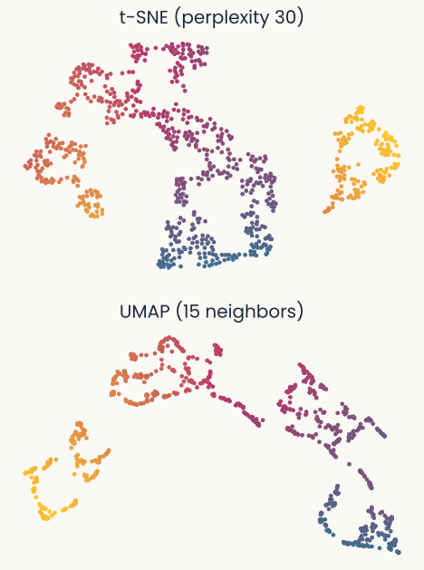
t-SNE at perplexity 30 and UMAP with 15 neighbors applied to the same Swiss roll. Both keep neighboring colors together, and both break the sheet into pieces rather than unrolling it into one strip
Open full-size figure{kind=link}
Slide 36
UMAP's two settings
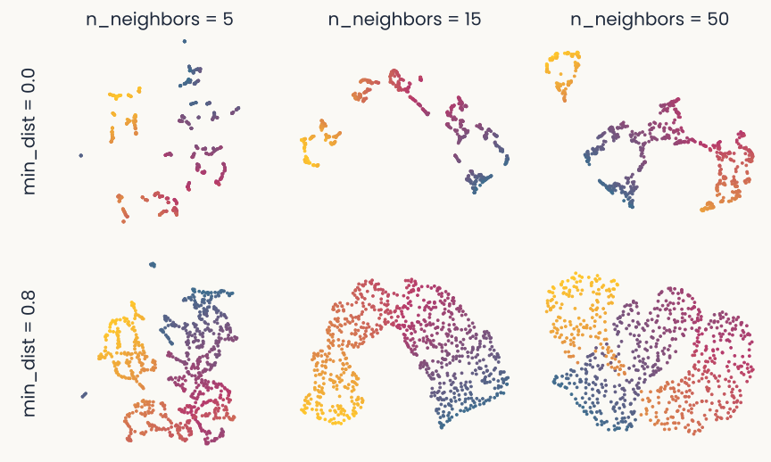
UMAP maps of the Swiss roll in a grid: columns n_neighbors 5, 15 and 50; rows min_dist 0.0 and 0.8. With few neighbors the sheet shatters into many small pieces; with more neighbors the pieces join into longer strands. With min_dist 0.0 points pack into thin tight threads; with 0.8 they spread into broad bands
Open full-size figure{kind=link}
n_neighborsplays the role of perplexity: how many neighbors each point listens to. Few: many small pieces. Many: more global shape.min_distsets how tightly points may pack: 0 gives thin, tight clumps; larger values spread them out. It changes the look, not the neighbors.- Same rule as t-SNE: sweep, and trust what holds across settings.
Next: five methods side by side.
Slide 37
Match the method to the relationship
| Method | Main aim | What to check |
|---|---|---|
| PCA | Retain variance in a linear projection | Variance retained; task information lost |
| MDS | Approximate supplied dissimilarities | Fit errors; dependence on the metric |
| Isomap | MDS on "along-the-sheet" distances | Neighbor graph; shortcut edges |
| t-SNE | Match local pairwise similarities | Neighborhood fidelity; settings and seeds |
| UMAP | Lay out a weighted neighborhood graph | Neighborhood fidelity; settings and seeds |
A measurement of a map describes the map. A claim about the representation needs evidence that the relevant relationship was preserved.
Slide 38
Which one should I use?
- Start with PCA: linear, fast, applies to new data, and tells you how much variance the 2-D view keeps.
- To look at neighborhoods and clusters, use t-SNE or UMAP. They are close cousins; Assignment 1 uses t-SNE only to keep it short, and UMAP would teach the same lessons.
- Whichever you use: PCA initialization, sweep perplexity or
n_neighborsand the random seed, and keep what holds across the sweep. - Never pick the prettiest run. A map suggests a claim; test it in the original space.
Next: each method at work in published neuroscience and AI.
Slide 39
In the wild: PCA
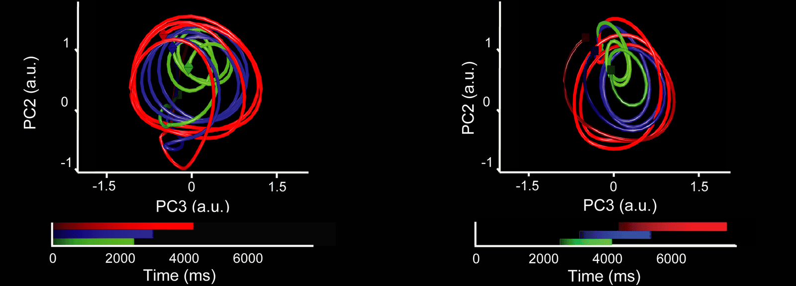
Premotor population activity of monkeys tapping to a beat, on the first principal components: the activity traces loops, larger for slower tempos
Open full-size figure{kind=link}
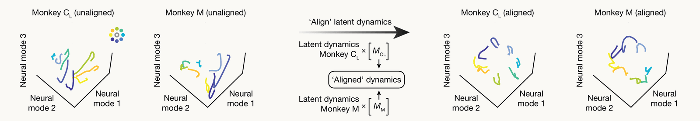
Neural trajectories of two monkeys making the same eight reaches, on the top principal components, before and after alignment
Open full-size figure{kind=link}
Slide 40
In the wild: MDS
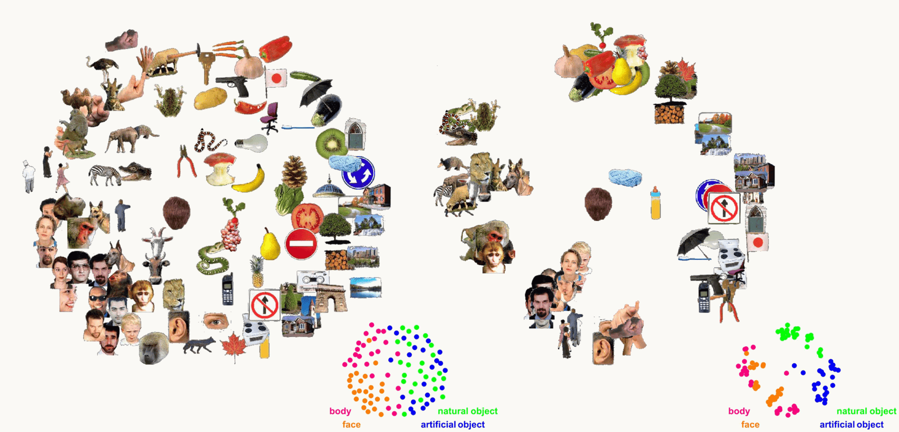
The same 92 object images arranged by MDS of human IT fMRI responses and of human similarity judgments
Open full-size figure{kind=link}
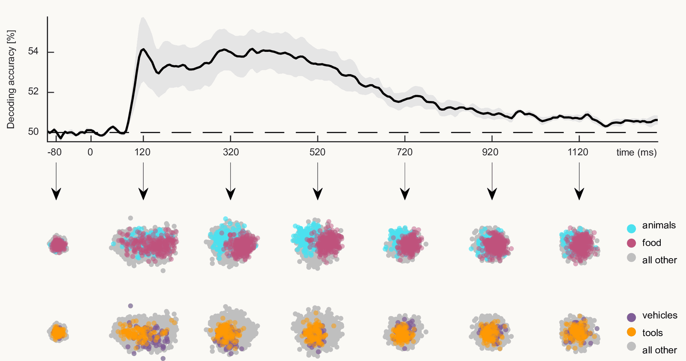
MDS of MEG response patterns to object images over time after image onset
Open full-size figure{kind=link}
Slide 41
In the wild: Isomap
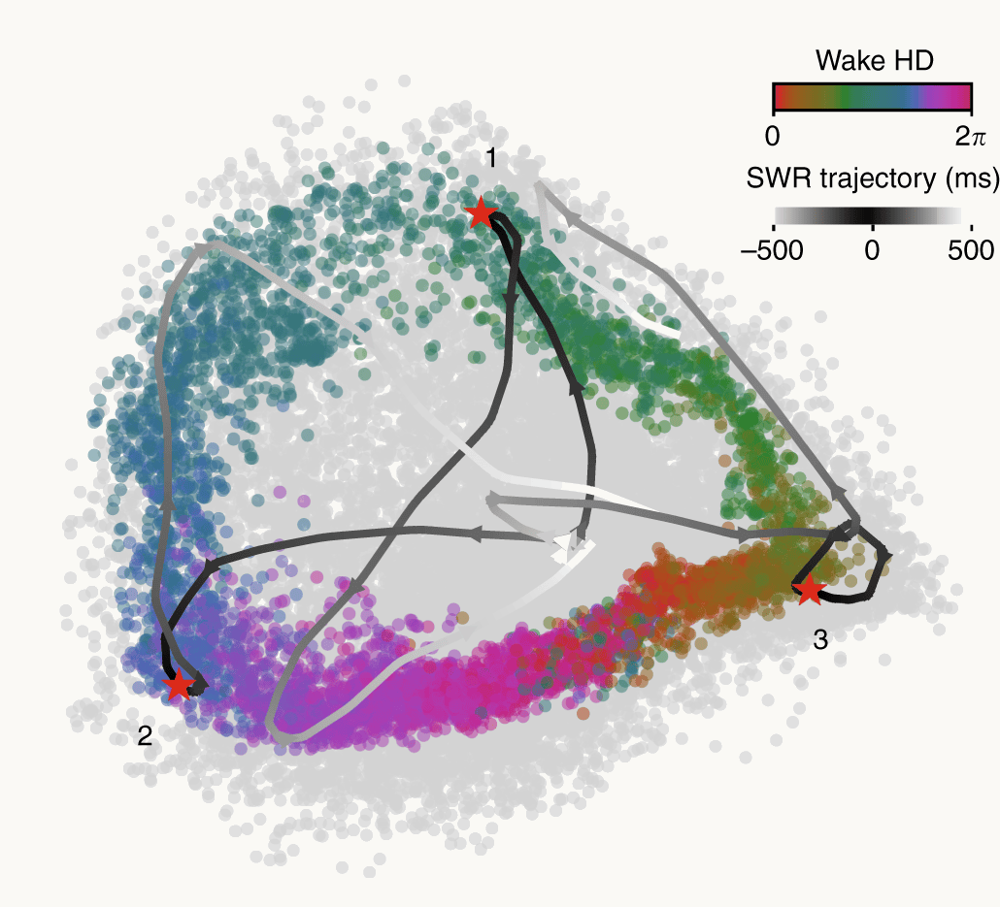
Head-direction population activity embedded with Isomap: a ring colored by heading, with activity during sleep travelling around it
Open full-size figure{kind=link}
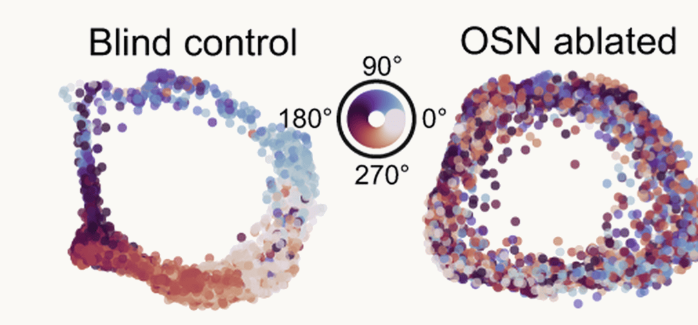
Isomap rings of head-direction activity in a blind control mouse and after olfactory ablation
Open full-size figure{kind=link}
Slide 42
In the wild: t-SNE
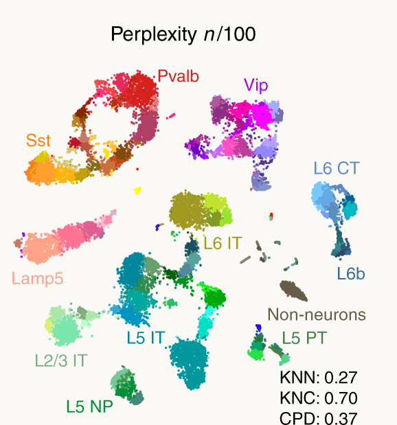
t-SNE of 23,822 mouse cortical cells by gene expression, forming labelled islands of cell types
Open full-size figure{kind=link}
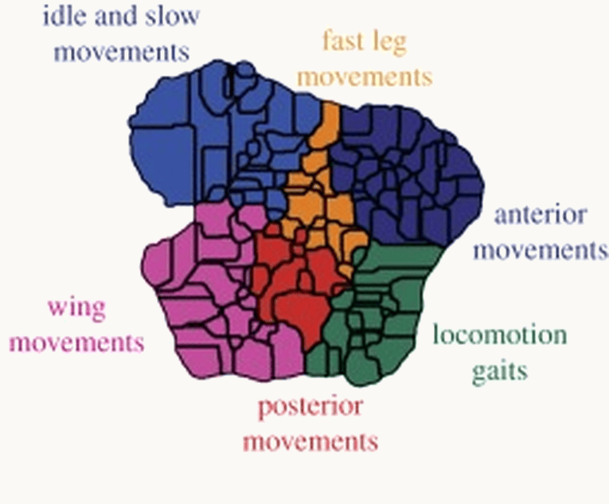
A t-SNE map of fruit-fly postures and movements divided into behavioural regions such as walking, grooming and wing movements
Open full-size figure{kind=link}
Slide 43
In the wild: UMAP
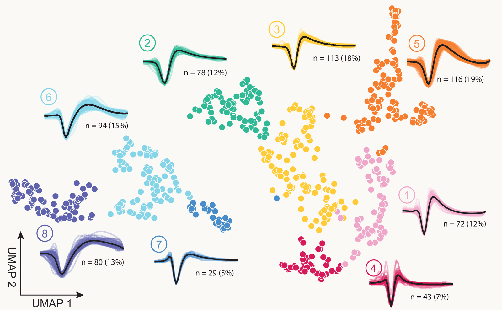
UMAP of 625 spike waveforms from monkey premotor cortex, in eight clusters with their average waveforms
Open full-size figure{kind=link}
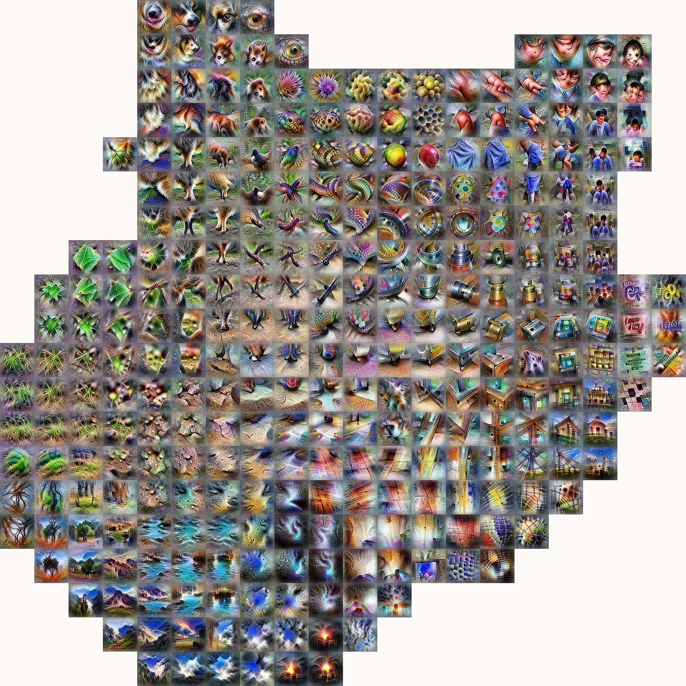
Activation Atlas: a grid of feature visualizations placed by UMAP of an image network layer, with animals, landscapes and objects in separate regions
Open full-size figure{kind=link}
Next: which features of such a map can you believe?
Slide 44
Back to our data: same responses, two maps
Suppose we plot the same network responses twice: in the PCA map the objects overlap, in the t-SNE map they form separate islands.
- Did the network's responses change? No: only the plotting method did.
- Did the PCA map hide groups that are really there?
- Or did t-SNE exaggerate the groups to make them easier to see?
A map that looks cleaner does not mean the responses carry more information.
Next: watch it happen, live.
Slide 45
The same 120 animals, three ways — live
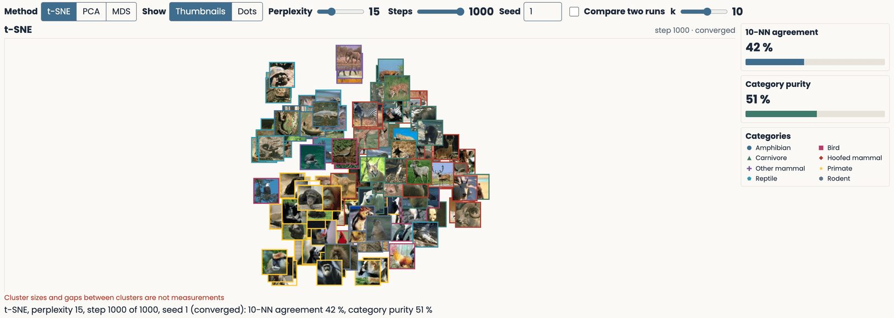
The t-SNE demo after 1,000 steps at perplexity 15, shown as dots: the 120 animals marked by category and arranged by the trained network's late-layer responses, with the 10-nearest-neighbor agreement (42%) and category purity (51%) meters beside them
Open full-size figure{kind=link}
Slide 46
Which claims survive a change of map?
Wattenberg, Viégas & Johnson (2016) built toy data with known structure and swept every setting. Their examples show what a visualization can change.
Slide 47
What a t-SNE map can fake
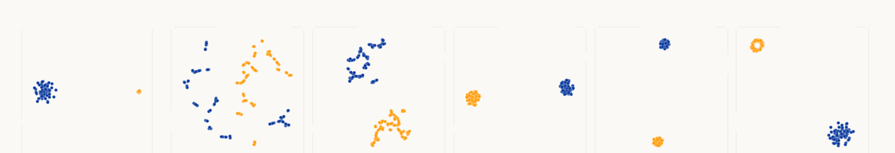
Two clusters of very different spread come out the same size in t-SNE
Open full-size figure{kind=link}
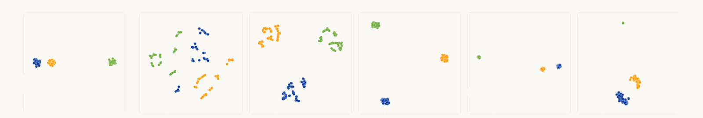
Clusters at different true distances come out at misleading distances
Open full-size figure{kind=link}
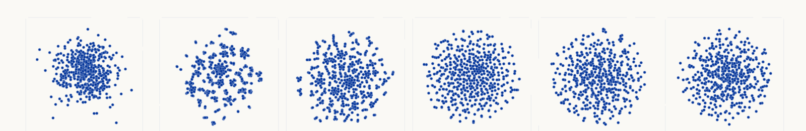
Random noise at low perplexity comes out as clumps
Open full-size figure{kind=link}
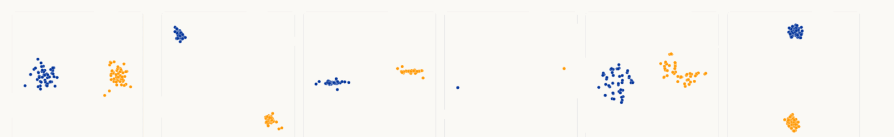
Early in a run, shapes are pinched and change as optimization proceeds
Open full-size figure{kind=link}
Assignment 1 Part 4 has you test each of these on real network responses: perplexity sweeps, seeds, and what two dimensions lose.
Slide 48
A map can be stable and still distort the data
Suppose two runs give the same ten nearest neighbors for an image, but only four are among its ten nearest neighbors in the original space.
| Check | Result | What it supports |
|---|---|---|
| Map versus map | Stable neighborhoods across these runs | |
| Map versus original space | Limited neighborhood fidelity here | |
| Six neighbors show the same object | purity | Object grouping within this map |
Repeatability, fidelity and object grouping are different questions. Assignment 1 Part 4 has you compute each one.
Next: if a map cannot settle a question, what can?
Slide 49
From a map to a test of the representation
| Question | Evidence to seek |
|---|---|
| Do views of the same object stay together? | Neighbors and object purity in the response space |
| Can object identity be read out? | Accuracy on held-out images of a readout: a simple classifier trained on the responses |
| Does a model resemble human judgments or brain responses? | Compare responses or dissimilarities for matched stimuli |
| Does learning change the representation? | Compare before and after learning under the same tests |
A map suggests the question; the response space answers it.
Slide 50
What have we learned about a representation?
- t-SNE and UMAP emphasize local neighborhoods; distant pairs are only weakly constrained. Sizes and gaps in the map are not measurements.
- Dimension is ambient, embedding (what PCA sees) or intrinsic (the surface's own). Isomap keeps "along-the-sheet" distances and can recover the intrinsic shape when the neighbor graph stays on the sheet.
- A map can reveal what a two-component PCA projection hides, and it can invent structure. Stability does not establish fidelity.
- To interpret grouping, check neighborhoods and labels in the response space. To interpret task information, test a readout on new data.
A useful map helps us formulate a claim that we can test.
Slide 51
Further reading
- Required reading: Wattenberg, Viégas & Johnson, How to Use t-SNE Effectively (2016)
- Short essay: Perich, Dimensionality: neuroscience's red herring? (2026)
- Research-trail options: Chaudhuri et al., head-direction ring (2019) · Gardner et al., grid-cell torus (2022) · Nieh et al., abstract knowledge in the hippocampus (2021) · Engels et al., circles in language models (2025)
- Optional: Sainburg, Thielk & Gentner, vocal repertoires (2020) · Chari & Pachter, The specious art of single-cell genomics (2023)
The paper you select for your research trail is required; the other research papers are optional.
Slide 52
Minute paper
Submit on Canvas → Minute papers → Minute Paper 5 (access code read out in class).
Write three brief points in your own words:
- Two networks' t-SNE maps of the same images: one has cleaner islands. Name one test of map fidelity and one test of task information.
- Something you do not yet understand, or a question still open
- Another idea you found interesting, and why it matters for brains, behavior or AI
Credit for a thoughtful attempt, not for being correct.
Slide 53
Appendix: extra examples
Two brain examples (a ring and a torus), the Swiss-roll demo with PCA, Isomap and UMAP, a second application of UMAP, and the precise definition of perplexity.
Slide 54
Sometimes the curved shape is the answer
Population activity of head-direction cells embedded nonlinearly: the states close into a ring, colored by the animal's heading running once around the loop
Open full-size figure{kind=link}
- Head-direction cells in the mouse anterodorsal thalamus: one point per time bin, one dimension per neuron.
- Isomap closes that cloud into a ring: one curved dimension, the shape a circular variable should have. A topological test (persistent homology) confirms the loop without trusting the picture.
- Position around the ring tracks the animal's head direction, and the ring persists in REM sleep: a circuit that maintains an internal direction.
- Language models do it too: days of the week and months sit on circles inside GPT-2 and Mistral.
Slide 55
PCA says six; a nonlinear map says torus
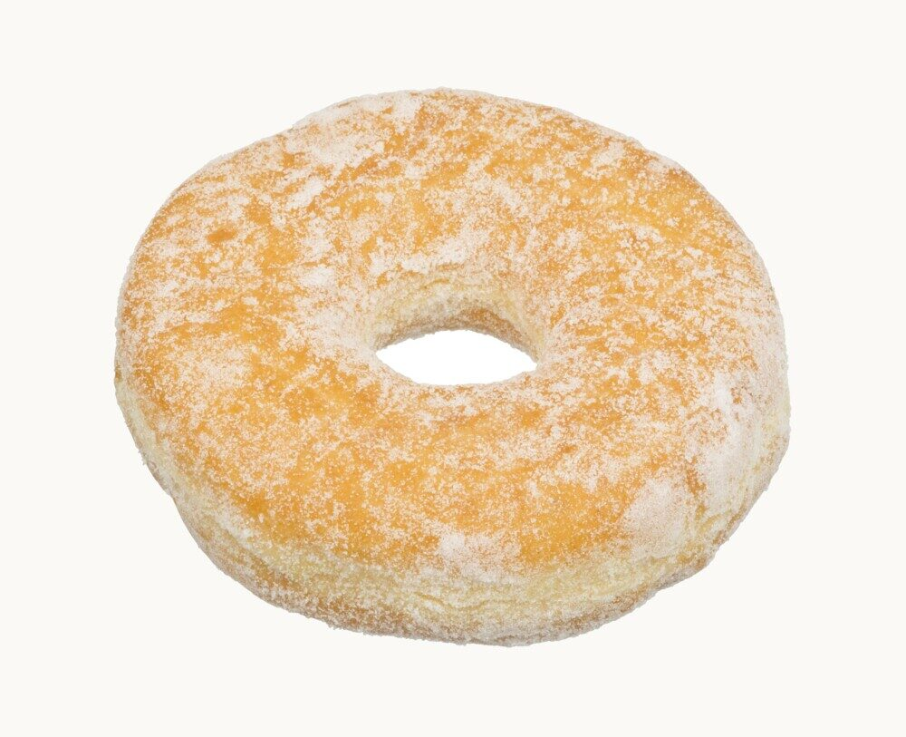
A sugared ring doughnut: a torus
Open full-size figure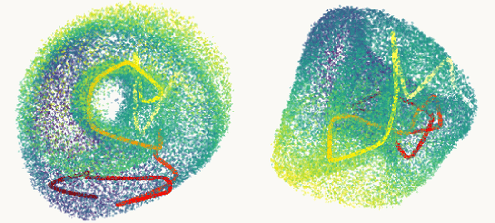
Grid-cell population activity embedded in 3-D, seen from two angles: the points form a torus, a ring-shaped surface with a hole, with a five-second stretch of the rat's trajectory drawn on it in red and yellow
Open full-size figure{kind=link}
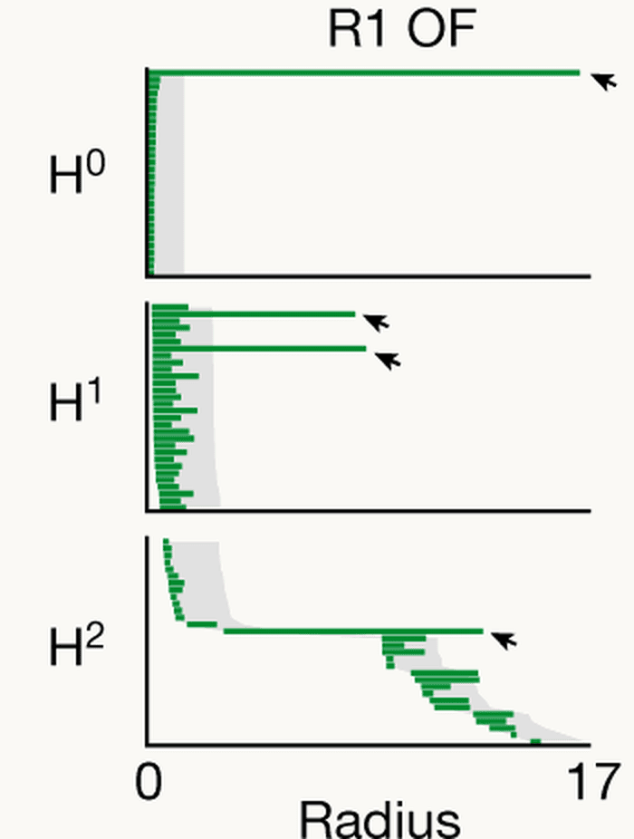
Persistence barcodes for the same data: one long bar in the H0 row, two long bars in the H1 row and one long bar in the H2 row, marked with arrows
Open full-size figure{kind=link}
- Grid cells are neurons in the rat brain that fire whenever the animal is at the corners of a triangular grid laid over the floor. PCA puts the activity of hundreds of them in about 6 dimensions.
- UMAP shows a torus: an intrinsically 2-D surface, as theory predicted. Persistent homology counts one piece, two loops, one cavity: a torus, tested, not eyeballed.
Slide 56
Unroll the Swiss roll
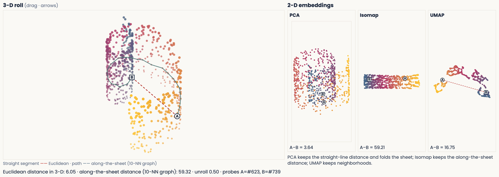
The Swiss-roll demo half unrolled: the sheet flattening out in the 3-D view with the two probe points and their straight-line and along-the-sheet paths, beside the PCA, Isomap and UMAP layouts
Open full-size figure{kind=link}
Slide 57
Are vocal repertoires discrete or continuous?
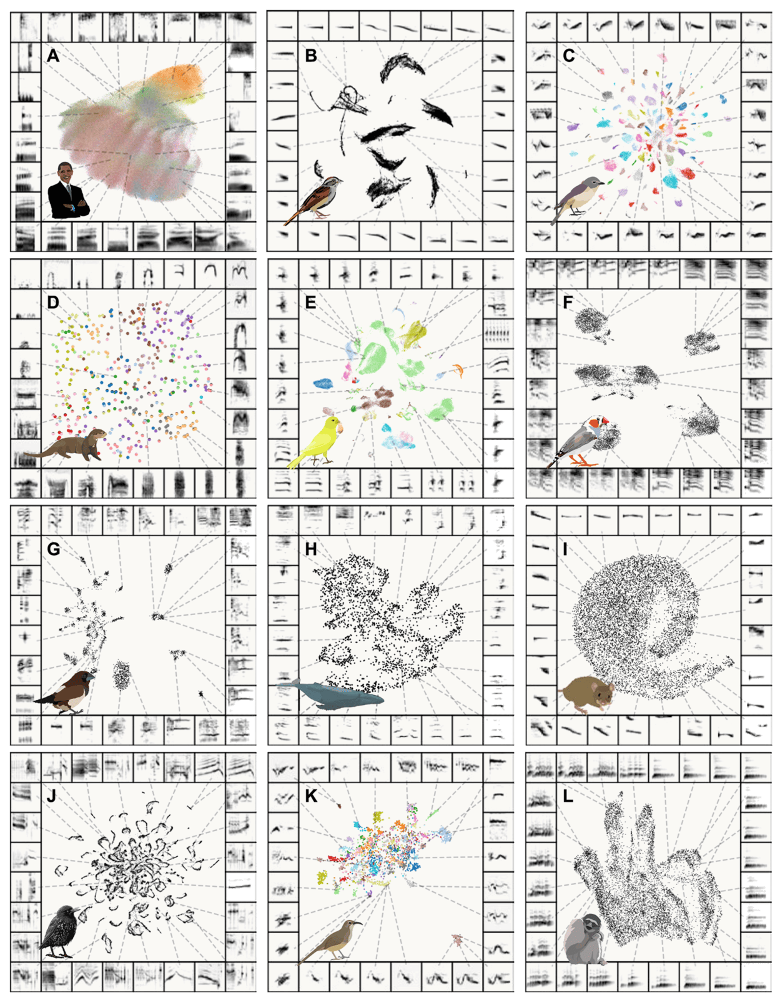
UMAP maps of vocal elements from twelve species, with different degrees of apparent grouping
Open full-size figure{kind=link}
- Each point represents a vocal element, described by its spectrogram.
- The maps suggest differences in how strongly vocal elements form groups.
- The paper also measures clusterability in UMAP space. A number makes the description precise, but still depends on the embedding.
- What would support a claim about the animals? Check acoustic relationships, labels or behavior as well.
Slide 58
Perplexity, precisely
- For point , collect its neighbor probabilities from Step 1 into one distribution, (one row of the conditional probabilities).
- Its entropy, , measures how evenly point spreads its probability: low for a narrow Gaussian, high for a wide one.
- The perplexity is . t-SNE finds, for each point separately, the that makes equal to the value you chose (a one-dimensional search, by bisection).
- Why "number of neighbors": if point spread its probability evenly over neighbors, and the perplexity would be exactly .